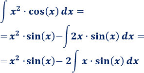
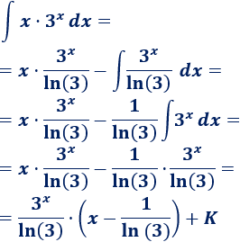

Integración por partes
En esta página explicamos el método de integración por partes paso a paso. Calcularemos 11 integrales mediante este método para ver el procedimiento. Este método se basa en la aplicación de la siguiente fórmula:
∫u dv=u⋅v−∫v du
donde
El método se aplica, sobre todo, cuando el integrando es un producto de funciones.
Notación: escribiremos la función logaritmo natural (logaritmo en base e como ln(x).
Ejemplo
Calculamos la integral
El integrando es un producto de dos funciones.
1. Identificamos u
y dv
Es importante pensar la elección de u
y dv
porque luego tenemos que derivar u
e integrar dv
. Además, tenemos que calcular la integral de la fórmula.
Si escogemos u=x
, entonces su derivada es du=dx
. Pero, entonces, tenemos que escoger dv=ln(x)dx
y para calcular v
tenemos que integrar el logaritmo.
Por tanto, escogemos la otra opción:
2. Calculamos du
y v
Para calcular du
tenemos que derivar u
:
Para calcular v
tenemos que integrar dv
:
3. Aplicamos la fórmula
Sólo tenemos que sustituir las variables de la fórmula:
4. Calculamos la integral que queda
La integral que queda es inmediata:
Por tanto,
No olvidéis la constante de integración K
.
Más integrales resueltas
No es necesario tener un producto en el integrando para aplicar integración por partes. La siguiente integral es un ejemplo de ello.
Integral 1
Solución
Antes que nada, aprovechamos las propiedades de los logaritmos para simplificar el integrando:
Vamos a calcular la integral del logaritmo natural (luego ya multilicaremos por 2).
Podemos escribir el integrando como un producto para ver claramente la aplicación de la fórmula:
1. Identificamos u
y dv
Obviamente, no debemos escoger dv=ln(x)dx
ya que entonces, tendríamos que calcular la integral del logaritmo, que es precisamente lo que estamos haciendo. Por tanto,
2. Calculamos du
y v
Derivamos e integramos:
3. Aplicamos la fórmula
Sustituimos en la fórmula:
Por tanto, la integral del problema es
En algunas integrales tendremos que aplicar el método varias veces. En estos casos, es importante mantener la elección de los factores u y dv. La siguiente integral es un ejemplo de ello.
Integral 2
Solución
El integrando es un producto de dos funciones.
1. Identificamos u
y dv
No importa si ex
es u
ó dv
porque tanto su derivada como su integral es ex
.
Si escogemos dv=x2
, tendremos que calcular la integral
Así que es mejor escoger u=x2
para bajar el grado del monomio.
2. Calculamos du
y v
3. Aplicamos la fórmula
Aplicamos de nuevo integración por partes para calcular la integral que nos queda. Para no deshacer los cálculos anteriores, mantenemos la elección de u
y dv
:
Por tanto,
Volviendo al comienzo,
Integral 3
Solución
1. Identificamos u
y dv
No importa si cos(x)
es dv
ó u
porque tanto su integral como su derivada son ±sin(x)
.
Escogemos u=x2
para rebajar su grado.
2. Calculamos du
y v
3. Aplicamos la fórmula

Aplicamos de nuevo integración por partes para calcular la integral que nos falta. Como dijimos en el problema anterior, debemos mantener la elección de los factores u
y dv
:
Aplicamos la fórmula:
Por tanto,
Elegimos un método de integración u otro según nuestra intuición. La siguiente integral la resolvemos por el método de integración por partes, pero la podemos resolver también fácilmente por el método de sustitución (con el cambio s2=x+1).
Integral 4
Solución
1. Identificamos u
y dv
Como en los problemas anteriores, escogemos u=x
para rebajar su grado.
2. Calculamos du
y v
Vamos a escribir la raíz como una potencia:
La derivada de u
es inmediata:
Calculamos v
integrando dv
:
Por si lo necesitáis, vamos a escribir el cálculo de v
:
3. Aplicamos la fórmula
Si operamos un poco, el resultado final queda como
 es 2/15·(3x - 2)·(x + 1)^(3/2) + K")
Hasta ahora, hemos hablado siempre de productos. Sin embargo, el método podemos utilizarlo para cocientes. Un ejemplo de ello es la siguiente integral.
Integral 5
Solución
Para aplicar el método cuando el integrando es un cociente, sólo hay que escribir el cociente como un producto:
1. Identificamos u
y dv
Como en las integrales anteriores, el logaritmo debe ser el factor u
.
2. Calculamos du
y v
3. Aplicamos la fórmula
/(x^2) y obtenemos - (ln(x) + 1)/x + K")
Muchas veces, tenemos que despejar la integral de la fórmula de integración por partes como hacemos en la siguiente integral.
Integral 6
Solución
1. Identificamos u
y dv
En esta integral no importa cuáles sean u
y dv
porque es irrelevante derivar o integrar la exponencial o el seno. Escogemos, por ejemplo,
2. Calculamos du
y v
3. Aplicamos la fórmula
Aplicamos de nuevo integración por partes:
Volviendo al comienzo, tenemos
Pasamos la integral del lado derecho sumando al lado izquierdo:
De donde podemos aislar la integral que buscamos:
Integral 7
Solución
1. Identificamos u
y dv
Escogemos u=x3
para rebajar su grado.
2. Calculamos du
y v
3. Aplicamos la fórmula
Repetimos el proceso dos veces más:
Observad que, por ejemplo, para resolver la integral de x100⋅ex
tendríamos que aplicar integración por partes 100 veces.
Integral 8
Solución
1. Identificamos u
y dv
Escogemos u=x
para eliminar este factor de la integral.
Recordad que la derivada de ax
es ax⋅ln(a)
.
2. Calculamos du
y v
")
3. Aplicamos la fórmula

Integral 9
Solución
1. Identificamos u
y dv
Escogemos el logaritmo como u
.
2. Calculamos du
y v
3. Aplicamos la fórmula
/raíz(x) obteniendo 2·raíz(x)·(ln(x) - 2) + K")
Integral 10
Solución
1. Identificamos u
y dv
Elegimos u=arccos(x)
y dv=dx
.
2. Calculamos du
y v
, du = - 1/raíz(1 - x^2) dx; dv = dx, v = x")
3. Aplicamos la fórmula